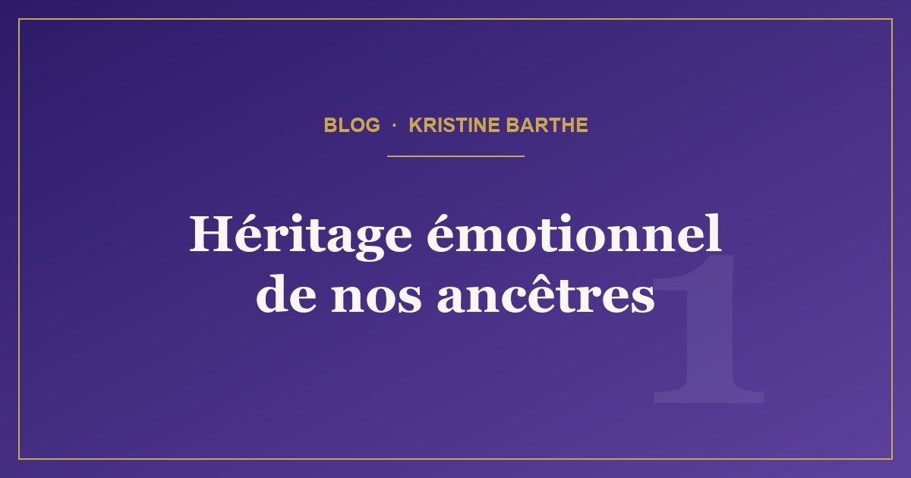

Comprendre
Comment les traumatismes de vos ancêtres façonnent votre vie aujourd'hui
La science révèle aujourd'hui un phénomène fascinant : les traumatismes émotionnels se transmettent de génération en génération.
Lire l'article →